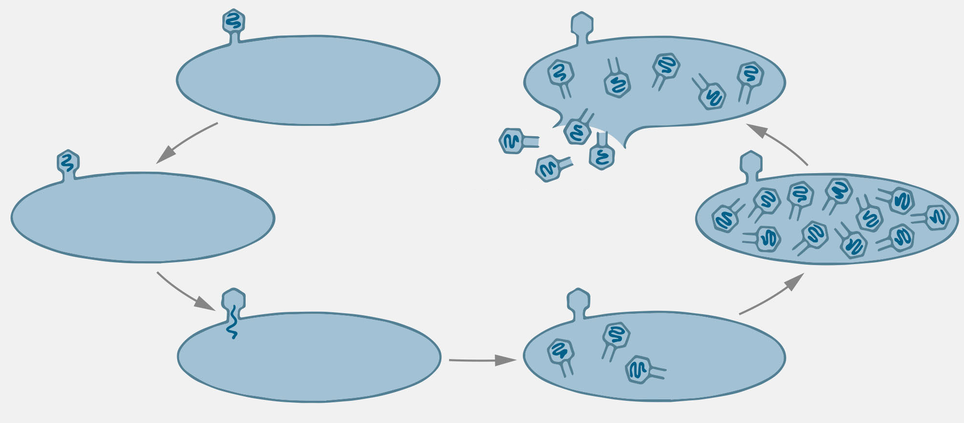

← Falsch
Wahr →
← Falsch → Wahr
0 / 8
Ziehen Sie die 5 Schritte an die richtige Stelle im Diagramm.

Achtung: Beide Zyklen beginnen gleich (Befall + Einbringen der Phagensubstanz) – erst danach unterscheiden sie sich.
Lytischer Zyklus
Lysogener Zyklus